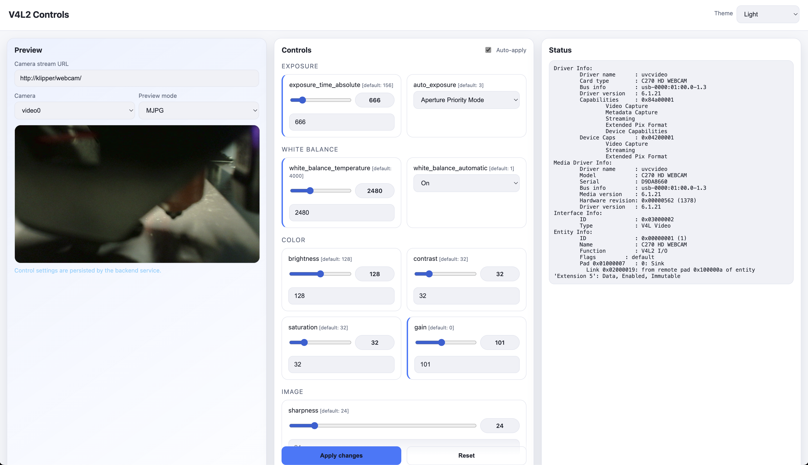
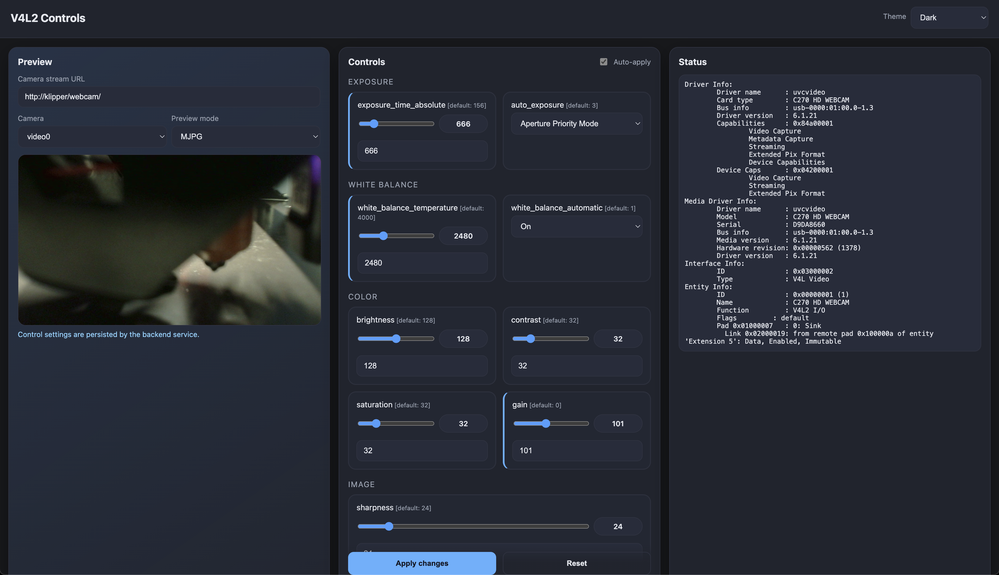

Touch-friendly web UI for managing V4L2 camera controls with embedded video preview
curl -sSL https://justinh-rahb.github.io/v4l2-ctrls/install.sh | sudo bash


One-Line Install
The easiest way to get started is with the automated installer script:
curl -sSL https://justinh-rahb.github.io/v4l2-ctrls/install.sh | sudo bash
To install a different branch, tag, or commit, set INSTALL_REF:
curl -sSL https://justinh-rahb.github.io/v4l2-ctrls/install.sh | sudo INSTALL_REF=feature-branch bash
What the Installer Does
- ✅ Ensures
v4l2-ctlis available (installsv4l-utilsif needed) - ✅ Verifies Python 3 and pip (installs
python3-pip+python3-venvif missing) - ✅ Downloads the
INSTALL_REFarchive to~/v4l2-ctrls(backs up any existing install) - ✅ Creates a Python virtual environment and installs requirements
- ✅ Creates a systemd service for the current sudo user
- ✅ Prompts to enable/start the service
Note: The installer must be run as root. It uses the sudo user to determine the install path and service user.
Defaults Created by the Installer
- Install path:
/home/<user>/v4l2-ctrls - Service:
/etc/systemd/system/v4l2-ctrls.service - Bind address:
0.0.0.0 - Port:
5000 - Camera URL:
http://127.0.0.1/(app default) - Stream paths (app defaults):
- MJPG:
{prefix}stream.mjpg - Snapshot:
{prefix}snapshot.jpg - WebRTC:
{prefix}webrtc
- MJPG:
Access the UI after install:
http://<your-pi-ip>:5000
Customize the Service
Edit the service file to customize your installation:
sudo nano /etc/systemd/system/v4l2-ctrls.service
Example with Custom Device and Stream URLs
[Unit]
Description=V4L2 Camera Controls Web Interface
After=network.target
[Service]
Type=simple
User=pi
WorkingDirectory=/home/pi/v4l2-ctrls
ExecStart=/home/pi/v4l2-ctrls/venv/bin/python3 /home/pi/v4l2-ctrls/v4l2-ctrls.py \
--device /dev/video2 \
--camera-url "http://10.0.3.229:8081/" \
--stream-path-mjpg "{prefix}?action=stream" \
--stream-path-snapshot "{prefix}?action=snapshot" \
--host 0.0.0.0 \
--port 5000
Restart=always
RestartSec=10
[Install]
WantedBy=multi-user.target
Common MainsailOS/FluiddPi Streamer Defaults
If you're using the standard MainsailOS/FluiddPi webcam endpoints (often via crowsnest), these settings are typical:
ExecStart=/home/pi/v4l2-ctrls/venv/bin/python3 /home/pi/v4l2-ctrls/v4l2-ctrls.py \
--camera-url "http://127.0.0.1/" \
--stream-prefix /dev/video0=/webcam/ \
--stream-path-mjpg "{prefix}?action=stream" \
--stream-path-snapshot "{prefix}?action=snapshot" \
--host 0.0.0.0 \
--port 5000
After making changes, reload and restart:
sudo systemctl daemon-reload
sudo systemctl restart v4l2-ctrls
Managing the Service
sudo systemctl status v4l2-ctrls
sudo journalctl -u v4l2-ctrls -f
sudo systemctl restart v4l2-ctrls
sudo systemctl stop v4l2-ctrls
sudo systemctl start v4l2-ctrls
sudo systemctl disable v4l2-ctrls
sudo systemctl enable v4l2-ctrls
Uninstall
sudo systemctl stop v4l2-ctrls
sudo systemctl disable v4l2-ctrls
sudo rm /etc/systemd/system/v4l2-ctrls.service
sudo rm -rf /home/<user>/v4l2-ctrls
sudo systemctl daemon-reload
Troubleshooting
Service Won't Start
# Check logs
sudo journalctl -u v4l2-ctrls -n 50
# Check if device exists
ls -la /dev/video*
# Test manually
cd /home/<user>/v4l2-ctrls
source venv/bin/activate
python3 v4l2-ctrls.py --device /dev/video0 --camera-url "http://127.0.0.1/"
Camera Preview Not Working
- Make sure your camera streamer is running.
- Check the camera URL in the web UI matches your setup.
- Test the URLs directly in a browser (use your configured base URL/prefix):
- MJPG:
http://your-pi-ip/stream.mjpg - Snapshot:
http://your-pi-ip/snapshot.jpg
- MJPG:
Port 5000 Already in Use
Change the port in the service file to something else (e.g., 5001):
sudo nano /etc/systemd/system/v4l2-ctrls.service
# Change --port 5000 to --port 5001
sudo systemctl daemon-reload
sudo systemctl restart v4l2-ctrls